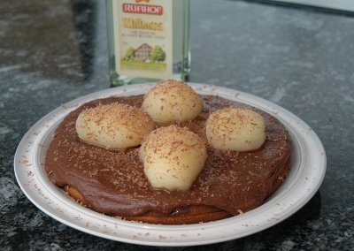

| Zutaten für 4 Personen: | |
| 3 | Eier |
| 120 g | Zucker |
| 1/2 TL | Ingwerpulver |
| 2 EL | Halbrahm sauer |
| 1 Prise | Salz |
| 70 g | Mehl |
| 50 g | Butter |
| Füllung: | |
| 1 Dose | Spalierbiernen |
| 2 EL | Honig |
| 1 EL | Williams |
| Glasur: | |
| 150 g | Schokolade |
| 10 g | Butter |
| 2 EL | Williams |
Für eine Form von ca. 20 cm Ø: (ca. 8 Portionen)
Zubereitungszeit: 30 Minuten
Backzeit: 40-50 Minuten
Eier und Zucker zu einer sämigen Crème schlagen.
Sauren Halbrahm, gesiebtes Mehl, Salz und Ingwer zugeben. Zu einem glatten Teig rühren.
Butter schmelzen und zufügen. In die bebutterte Form einfüllen und 40 - 50 Minuten bei 180°C backen.
4 Birnenhälften beiseite legen.
Restliche Birnen in feine Scheiben schneiden. Mit Honig und Williams mischen.
Den erkalteten Kuchen quer halbieren und mit dieser Mischung füllen.
Die Schokolade in Stücke brechen, im Wasserbad mit Williams schmelzen lassen. Butter darunter rühren.
Die Glasur über den Kuchen verteilen, die Birnen darauf anordnen. Mit wenig geriebener Schokolade garnieren.
Pro Stück: 383 Kalorien, 1603 Joule
Herbert Eigenmann, Code: BIC
Am 12.6.2009 zubereitet. Meine Form ist mit 22 cm Durchmesser etwas grösser als vorgegeben weshalb die Glasur dann etwas dünner ausfällt. Ich fand den Aufwand beträchtlich. Der Kuchen schmeckt aber ganz ordentlich.